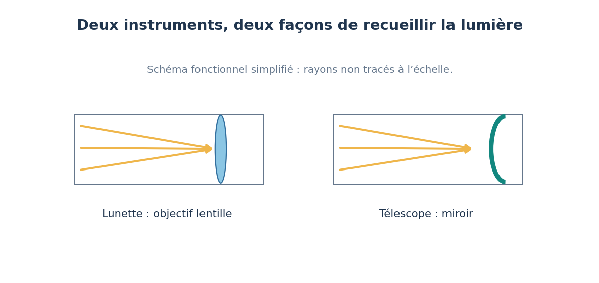

5′
1. Je m’interroge
Avec ses jumelles, Inès voit plus d’étoiles qu’à l’œil nu, même en ville.
Les jumelles rapprochent-elles les étoiles ?
Le ciel voléDémarche scientifique
Je vais comprendre comment une lunette et un télescope recueillent la lumière des astres.
Objectif : Je vais comprendre comment une lunette et un télescope recueillent la lumière des astres.
Je réussis si : Je légende le trajet de la lumière dans une lunette et un télescope, et j’explique le rôle de l’ouverture.
Avec ses jumelles, Inès voit plus d’étoiles qu’à l’œil nu, même en ville.
Les jumelles rapprochent-elles les étoiles ?
Observe le schéma de la lunette et du télescope, puis réponds.

Pourquoi a-t-il fallu accumuler la lumière pendant des centaines d’heures pour obtenir cette image ?
Une lunette recueille la lumière avec une lentille, un télescope avec un miroir concave. Plus l’ouverture est grande, plus l’instrument recueille de lumière : il montre des astres trop faibles pour l’œil nu. Un instrument ne rapproche pas l’astre observé.
Mots-clés : lunette, télescope, lentille, miroir concave, ouverture, foyer, image
Une lunette astronomique recueille la lumière avec une lentille, l’objectif ; un télescope la recueille avec un miroir concave. Dans les deux cas, la lumière venue d’un astre lointain arrive en rayons presque parallèles et l’optique la fait converger en un point, le foyer, où se forme l’image. Plus l’ouverture (le diamètre de l’objectif ou du miroir) est grande, plus l’instrument recueille de lumière : une ouverture de 10 cm recueille environ 200 fois plus de lumière que la pupille de notre œil dans le noir (7 mm). C’est pourquoi on voit des étoiles invisibles à l’œil nu. Un instrument ne rapproche pas l’astre : il recueille plus de lumière et sépare mieux les détails.
Fiche de connaissances : Comment un instrument nous aide-t-il à observer les astres ? →
Construis une frise qui relie chaque instrument à ce qu’il a permis d’observer.
Ce que je dois produire : Frise annotée et fiche « fonction de l’instrument ».
Matériel : Schéma lunette/télescope, documents historiques.
Le besoin est souvent : recueillir plus de lumière, voir plus de détails, échapper à l’atmosphère.
J’écoute, j’explique mes choix et j’accepte de changer d’avis quand les preuves l’exigent.
Objectif : Identifier la fonction de collecte de lumière des instruments ; relier évolutions techniques et usages.
Programme : Thème 1 « Les objets et les systèmes techniques : leurs usages et leurs interactions à découvrir et analyser » : « Décrire les liens entre usages et évolutions technologiques des objets et des systèmes techniques ».
Déroulé : S’interroger 5 min ; Enquêter 20 min ; Conclure 8 min ; Mission 17 min ; Bilan 5 min.
Les instruments évoluent pour recueillir plus de lumière (miroirs plus grands), voir plus nettement (au-dessus de l’atmosphère) et détecter d’autres rayonnements (infrarouge).
Document « Le champ extrêmement profond de Hubble (XDF, 2012) » : Les galaxies photographiées sont extrêmement faibles : il faut recueillir leur lumière très longtemps. L’image compte environ 5 500 galaxies ; ses couleurs résultent d’un traitement de plusieurs filtres.
Point de vigilance : Distinguer collecte de lumière, grossissement et résolution ; un instrument ne « rapproche » pas l’astre.